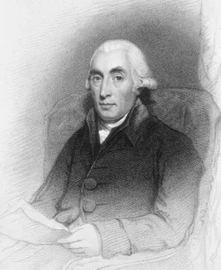

1. NATRIUM
SERUNYA MENGAPUNG DI LAUT MATI!
Teman-teman pasti sering mendengar keunikan dari Laut Mati ini. Ya, Kita akan sulit tenggelam di laut mati loh! Tapi, apakah kalian tau apa penyebab Laut Mati berbeda dengan laut lainnya? Apasih yang ada di sana? Emangnya Laut Mati itu ada magic nya ya? Untuk menjawab pertanyaan kalian. Yuk, simak penjelasan-penjelasan berikut!
Ternyata yang berpengaruh salah satunya adalah Natrium, nih.
Natrium adalah unsur logam yang melimpah dan merupakan mineral penting untuk semua organisme hidup. Hal ini juga banyak digunakan industri untuk membuat berbagai macam barang-barang konsumsi. Logam lunak ini juga muncul dalam kelimpahan senyawa, seperti natrium klorida, lebih dikenal sebagai garam dapur. Garam ini juga ada dalam konsentrasi tinggi dalam air laut, dan itu merupakan satu dari 10 mineral yang paling melimpah di kerak bumi.
BAGAIMANA PROSES PENEMUAN NATRIUM?
Awal karier Sir Humphry Davy dimulai ketika dia menjadi guru besar Royal Institute di London (salah satu muridnya yang terkenal adalah Faraday), dan menemukan banyak unsur kimia antara tahun 1802-1813. Pada tahun 1807, dia berhasil memisahkan antara unsur kalium dengan natrium. Natrium murni pertama kali diisolasi oleh Sir Humphry Davy melalui elektrolisis soda kaustik (NaOH). Karena natrium dapat menghasilkan ledakan pada saat kontak dengan air, maka harus disimpan dalam lingkungan bebas air seperti minyak.
DALAM BENTUK APA NATRIUM DITEMUKAN DI BUMI?
Natrium adalah elemen ke-6 yang termasuk golongan IA dalam tabel periodik yang memiliki simbol Na dan nomor atom 11 serta berat atom 22.98. Mempunyai warna nyala kuning dan elemen yang paling berlimpah di Bumi. Hal ini tidak pernah ditemukan dalam bentuk murni karena sangat reaktif. Hal ini hanya ditemukan dalam senyawa seperti Natrium klorida (NaCl) atau garam meja. Natrium klorida ditemukan dalam air laut (air asin), danau garam, dan bawah tanah. Natrium murni di dapat dari Natrium klorida melalui elektrolisis.
APASIH PENYEBAB KITA BISA MENGAPUNG DI LAUT MATI?
Sebenarnya, Laut Mati bukanlah laut melainkan danau yang sangat besar dengan ukuran panjang lebih dari 50 km, lebar lebih dari 15 km, dan luas permukaan lautnya lebih dari 500 km2. Karena ukurannya yang sangat besar inilah makanya diputuskan untuk menyebut danau ini disebut sebagai laut. Laut Mati juga merupakan tempat terendah di bumi, sekitar 300 m lebih rendah dari permukaan laut. Kita bisa mengapung karena kandungan garam di Laut Mati sangat tinggi, yaitu 33,7% atau sekitar 9 kali lebih banyak daripada kandungan garam di laut pada umumnya yang berkisar 3,5%.Dan penyebab lainnya, Massa jenis tubuh manusia adalah 0,985 gr/cm3, sedangkan massa jenis air Laut Mati adalah 1,24gr/cm3. Karena massa jenis tubuh manusia lebih kecil, makanya manusia bisa mengapung di Laut Mati.
Menurut Minerva Dead Sea Research Center (MDSRC), ketika menguap, hanya air saja yang menguap, sedangkan mineral-mineral seperti magnesium, potasium, sulfur, dan garam (Natrium klorida) tetap ada di dalamnya. Salinitas meningkat seiring makin dalamnya air. Di kedalaman di bawah 100 meter, air di Laut Mati sedemikian pekat dan garam menumpuk di dasar laut. Ingat ya, yang bisa mengapung adalah benda yang massa jenisnya lebih kecil daripada massa jenis Laut Mati. Jadi, kalau misalkan kamu jatohin besi ke Laut Mati ya bakal tenggelam juga, soalnya massa jenis besi tuh 7,87 gr/cm3.
LAUT MATI PERNAH KERING LOH!
Pada 2010 dan 2011,para ilmuwan mengebor di bawah Laut Mati untuk mencari petunjuk tentang sejarah geologisnya. Pengeboran dilakukan oeh tim gabungan dari Israel, Amerika, Jerman, Jepang, Norwegia, dan Switzerland. Steven L. Goldstein, profesor Earth adn Environtmental Sciences dan ahli geokimia di laboratorium bumi Lamont-Doherty, dan salah satu pimpinan proyek, mengatakan hasil pengeboran menunjukkan bahwa Laut Mati pernah benar-benar mengering setidaknya 2 kali tanpa gangguan dari manusia, pada ratusan tahun lalu. Kekeringan tersebut menyisakan garam dan mineral, salah satunya adalah Natrium klorida (NaCl).
Eits, tapi jangan salah. Meskipun kadar garamnya tinggi, justru kandungan garam dan mineral ini membantu menyembuhkan masalah kulit seperti kulit alergi, dermatitis atopik, kerutan, rambut rontok, psoriasis dan banyak lagi. Orang-orang di sekitar sana menggunakan pasir Laut Mati untuk mengobati radang sendi karena mineral dalam pasir itu membantu meningkatkan sirkulasi darah dan juga bertindak sebagai pelemas otot.
DO YOU KNOW?
Sir Humphry Davy adalah seorang ahli kimia asal Inggris. Dia lahir di Penzance, Cornwall, Inggris, dan meninggal di Jenewa. Ia adalah seorang ahli kimia dan penemu Kalium, Kalsium, Natrium, Barium, dan Boron
Natrium mendapatkan namanya dari kata bahasa Inggris soda. Hal ini karena Sir Humphry Davy menggunakan soda api saat mengisolasi elemen. Simbol Na berasal kata Latin dari natrium.
LAUT MATI ADA JUGA DI INDONESIA LOH!
Yup, Laut Mati versi Indonesia tersebut ialah Pantai Tureloto yang berlokasi di Desa Balefadorotuho, Kecamatan Lahewa, Kabupaten Nias Utara, Sumatera Utara dan memiliki kadar garam yang juga tergolong tinggi (meskipun tak setinggi Laut Mati) serta pasir yang unik, karena berasal dari pecahan kulit kerang atau keong.
Dan ada juga nih, Laut Mati buatan. Laut mati buatan ini bisa kita jumpai di 'Atlantis Water Adventure' Taman Impian Jaya Ancol, Jakarta. Dengan nama Kolam Apung. Kolam berukuran 500 meter persegi dengan kedalaman 1 meter didesain menyerupai Laut Mati. Kolam Apung ini adalah Laut Mati buatan pertama dan satu-satunya di Asia Tenggara. Dengan kadar garam mencapai 240 ppm itulah yang membuat kita mampu mengapung diatas air dalam keadaan tenang dan tanpa harus berenang atau mengenakan pelampung. Biasanya pengunjung memanfaatkannya sebagai tempat relaksasi setelah seharian bermain di Water Adventure. Walaupun kadar garam mencapai 10 kali lebih tinggi dari laut normal tapi tenang saja, wahana ini aman bagi kesehatan manusia karena telah melewati serangkaian uji coba kesehatan demi menjamin kenyamanan pengunjung. Usahakan pada saat mengapung , teman-teman tidak meminum terlalu banyak air karena airnya sangat asin dan tidak baik untuk dikonsumsi.
MANFAAT NATRIUM DALAM KEHIDUPAN
RASA DALAM MAKANAN - Natrium klorida (NaCl) adalah bahan kimia umum yang digunakan sebagai garam meja. Itu digunakan dalam kehidupan sehari-hari untuk memasak makanan. Ini menanam rasa asin yang tidak dapat digantikan oleh zat lain.
DALAM PENGOBATAN RACUN - Natrium Bikarbonat (NaHCO3) adalah senyawa lain yang mengandung natrium. Ini banyak digunakan dengan cara yang berbeda. Pengobatan keracunan dalam keadaan darurat Medis: Natrium Bikarbonat digunakan dalam kasus keracunan karena salisilat dan obat asam lainnya. Ini membantu menghilangkan racun asam dari tubuh melalui urin
DALAM PEMBUATAN SABUN - Natrium Hidroksida (NaOH) digunakan dalam pembuatan sabun. Ini membantu dalam saponifikasi asam lemak selama proses. Ini juga disebut soda kaustik karena kemampuannya untuk menginduksi kulit terbakar ketika kristal padat disimpan di tangan.
PENGAWETAN MAKANAN - Dalam membuat anggur: Natrium Bisulfit (NaHSO3) adalah senyawa natrium yang digunakan sebagai aditif makanan terutama dalam pembuatan anggur. Bisulfit natrium ini melepaskan gas sulfur dioksida yang membunuh ragi dan bakteri lain dalam anggur. Ini juga digunakan dalam pipa dan permukaan logam lainnya yang terbuat dari besi untuk mencegahkorosi.
PERAWATAN KERACUNAN SIANIDA - Keracunan sianida diobati dengan menggunakan penawar racun dengan kombinasi Vitamin-B12, Natrium Nitrit dan Natrium Tiosulfat.
APAKAH ADA MANFAAT NATRIUM BAGI TUBUH MANUSIA?
Jangan membayangkan kandungan natrium dalam tubuh kita merupakan natrium murni seperti yang telah dijelaskan di atas, ya. Natrium dalam tubuh kita memang merupakan mineral penting yang harus terpenuhi, namun tetap dikontrol asupannya. Asupan natrium biasanya berasal dari garam dapur yang kita konsumsi sehari-hari. Makanan hewani dan juga nabati juga mengandung unsur natrium di dalamnya. Makanan yang sering kita makan, seperti ikan laut juga mengandung natrium. Biasanya natrium dalam makanan hewani mengandung lebih banyak natrium jika dibandingkan dengan makanan nabati.
MENJAGA KONDISI JANTUNG - Konsumsi natrium secara terkontrol dapat menjaga kesehatan jantung, terutama bagi orang-orang dengan tekanan darah rendah. Konsumsi natrium akan meningkatkan denyut jantung sekaligus meningkatkan tekanan darah pada orang-orang yang menderita tekanan darah rendah. Tentu saja konsumsi natrium juga harus pada taraf wajar. Konsumsi natrium yang terlalu berlebih justru akan menyebabkan tekanan darah tinggi dan memicu gangguan jantung.
MENCEGAH KRAM OTOT - Cuaca panas menyebabkan jumlah cairan elektrolit di dalam tubuh tidak seimbang. Dengan meningkatkan asupan natrium, keseimbangan elektrolit di dalam tubuh akan terjaga sehingga kram otot dapat dicegah. Selain mencegah kram otot, jumlah cairan elektrolit yang tercukupi akan mencegah tubuh terkena dehidrasi.
MENURUNKAN KARBONDIOKSIDA DI DALAM TUBUH - Karbondioksida merupakan salah satu senyawa hasil metabolisme yang harus dibuang dari dalam tubuh. Melalui proses pernapasan, karbondioksida akan dikeluarkan dari dalam tubuh. Namun, pada beberapa kasus, karbondioksida tidak dapat dibuang habis dari dalam tubuh. Natrium akan membantu mengeluarkan karbondioksida dari dalam tubuh melalui cairan yang dikeluarkan dalam bentuk urin dan keringat. Urin dan keringat yang dikeluarkan oleh tubuh akan bercampur dengan karbondioksida, sehingga karbondioksida dalam tubuh bisa berkurang
2. MAGNESIUM
SERU NYA MAIN KEMBANG API SAAT TAHUN BARU!
Benar nggak teman-teman? Sudah pasti dong! Seru banget kumpul bareng keluarga, sahabat, dan tetangga sampai menjelang tahun baru. Uh, saat kembang api sudah meledak di langit semua pasti akan teriak deh. Tapi, pernah kah kamu terpikir, kenapa ya kembang api itu bisa meledak dan salah satu warnanya seperti warna putih terang? Jawabannya adalah : Magnesium.
Ternyata yang berpengaruh salah satunya adalah Natrium, nih.
bMagnesium adalah unsur golongan IIA dalam tabel periodik, yang merupakan logam berwarna putih keperakan yang cukup kuat digunakan dalam konstruksi bangunan, jembatan, mobil dan pesawat terbang. Magnesium memilliki titk leleh 651˚C dan titik didih 1100˚C, dan densitasnya 1,738 g/cm3 (Newton, 2010). Magnesium dikategorikan logam ringan dari beberapa logam ringan yang biasa digunakan dalam struktur. Magnesium merupakan unsur kimia yang memiliki simbol Mg dan nomor atom 12 serta berat atom 24,31 gr.
SIAPAKAH PENEMU MAGNESIUM?
Penemu Magnesium adalah Joseph Balck pada tahun 1760. Black menghabiskan banyak waktunya untuk mengamati perpindahan kalor. Karena sering berkutat di laboratorium, ia berhasil mendapatkan penemuan yang sangat penting di tahun 1761, yaitu kalor laten. Kalor laten adalah kalor yang diserap oleh suatu zat, bukan untuk menaikkan suhu zat tersebut, tetapi digunakan untuk mengubah wujudnya. Kita dapat mengamati kalor laten dalam kehidupan sehari-hari, misalnya, ketika air (zat cair) yang dipanaskan berubah menjadi uap air (zat gas).
Black juga membuktikan bahwa setiap benda menyerap kalor yang berbeda untuk menaikkan suhunya sebanyak satu derajat. Inilah yang sebenarnya kita ukur ketika menggunakan kalorimeter, alat yang diciptakan oleh Balck. Black jugalah orang yang dianggap sebagai penemu gas karbon dioksida. Joseph Black adalah guru dari James Watt, penemu mesin uap.
BAGAIMANA CARA MENDAPATKAN LOGAM MAGNESIUM MURNI?
Pada 1800, ahli kimia tahu bahwa magnesium adalah unsur. Tapi tidak ada yang mampu membuat logam magnesium murni. Magnesium berikatan sangat erat dengan unsur-unsur lain dalam senyawanya. Tetapi, tidak ada yang menemukan cara untuk memecahkan ikatan antara magnesium dan unsur-unsur lainnya. Sehingga pada tahun 1808, ahli kimia inggris humphry davy (1778-1829) memecahkan masalah dengan melewatkan arus listrik melalui melelehan cair magnesium oksida (MgO) menyebabkan senyawa pecah, membentuk logam magnesium dan gas oksigen. Davy menggunakan metode ini untuk menemukan sejumlah elemen lainnya. Seperti magnesium, elemen-elemen ini membentuk senyawa yang sangat sulit untuk pecah. Arus listrik memberikan energi untuk memecah senyawa ini ke dalam unsur-unsur pembentuknya.
ASAL USUL MAGNESIUM
Nama magnesium berasal dari kata Yunani yaitu magnesia yang merupakan nama sebuah kabupaten di Thessaly. Magnesium adalah unsur paling berlimpah kedelapan di dalam kerak bumi. Hal ini ditemukan dalam deposit besar magnesit, dolomit, dan mineral lainnya, dan dalam air mineral, di mana ion magnesium larut. Pada 1618 seorang petani di Epsom di Inggris berusaha untuk memberikan sapinya air dari sumur. Hal ini mereka menolak untuk minum karena rasa pahit air. Namun petani menyadari bahwa air tersebut bermanfaat untuk menyembuhkan goresan dan ruam. Ketenaran dari garam Epsom tersebut menyebar dan akhirnya diakui menjadi magnesium sulfat terhidrasi, MgSO4. Sir Humphry Davy electrolytically terisolasi logam magnesium murni pada tahun 1808 dari campuran magnesium dan HgO, dan AAB Bussy disiapkan dalam bentuk yang koheren pada tahun 1831. Usulan pertama Davy untuk sebuah nama magnium, tapi magnesium namanya sekarang digunakan.
MENGAPA KEMBANG API BISA MENGHASILKAN ANEKA WARNA?
Apakah teman-teman pernah melihat pertunjukkan kembang api? Benda yang bisa memancarkan cahaya yang berwarna-warni. Wah, pastinya sangat indah bila kita melihatnya di malam hari, apalagi ketika melihatnya pada acara tahunan, seperti tahun baru, imlek, dan hari raya besar lainnya. Kok bisa ya, kembang api memancarkan cahaya yang berwarna-warni? Apa saja kandungan yang terdapat pada kembang api? Yuk, simak penjelasannya!
Campuran Bahan Kimia
Kembang api adalah bahan peledak yang dicampur dengan serbuk bintang dan bahan pewarna lalu dimasukkan ke dalam selongsong kertas dan diberi sumbu. Bahan peledak yang digunakan adalah bahan kimia yang memiliki daya ledak ringan. Misalnya belerang atau hidrokarbon padat. Serbuk bintang itu bahan kimia juga. Apabila terbakar akan menghasilkan percikan api yang bercahaya dan berjura-jurai.Bahan pewarna untuk kembang api terbuat dari logam tertentu. Warna merah dihasilkan dari strontium dan lithium. Warna putih terang dari magnesium. Warna oranye dari kalsium. Warna hijau dari barium. Warna biru dari tembaga. Warna ungu dari potasium dan rubidium. Warna emas dari arang dan besi. Sedangkan warna merak dihasilkan dari logam alumunium, titanium, atau berilium.
Ketika sumbu dibakar, apinya membakar bahan peledak, hingga kembang api melesat ke atas lalu meledak. Duaarrr! Ledakannya membakar bahan pewarna dan serbuk bintang, hingga menimbulkan jurai-jurai api berwarna warni. Indah sekali.
DO YOU KNOW?
Joseph Black adalah ahli fisika dan pada tahun 1760 merupakan orang kulit hitam pertama yang gila dan mantap yang kemudian menyatakan prinsip Asas Black yaitu prinsip mengenai perbedaan antara suhu dan kalor.
Unsur Magnesium ditemukan pada tahun 1808 di Inggris oleh Sir Humphry Davy. Pertama kali diproduksi oleh Daville dan Caron di Perancis pada tahun 1863.
DO YOU KNOW?
Sekitar 50% dari total magnesium tubuh kita disimpan dalam tulang kita, sedangkan sisa bagian dari magnesium yang terutama ditemukan dalam sel-sel jaringan tubuh dan organ. Dan Hanya 1% magnesium tersedia dalam darah.

Kekurangan Magnesium dapat menyebabkan gangguan pecernaan, gangguan ginjal, dan alkoholisme kronis. Sedangkan Kelebihan Magnesium dapat mengakibatkan keracunan dengan ciri-ciri hipotensi, mual, kemerahan pada wajah, sulit bernafas, sampai dengan serangan jantung.
Biji-bijian, kacang-kacangan, sayuran berdaun gelap, kerang, buah ara, lemon, jeruk, jagung kuning, almond, apel, lentil, kacang split, tempe, kacang polong, kacang tanah, kacang mete, nasi, gandum, tauge, bayam, daun kelor, susu, keju cheddar, ayam dan daging sapi adalah beberapa makanan yang kaya magnesium
Meledak Berkali-Kali dan Berwarna-Warni
Kembang api biasanya tidak meledak sekali, tetapi berkali-kali. Setiap ledakan menghasilkan percikan api dengan warna cahaya yang berbeda-beda. Untuk membuat kembang api semacam itu, kembang api dibuat berlapis-lapis. Misalnya, bahan peledak yang dicampur dengan bahan pewarna biru dilapisi dengan bahan peledak yang dicampur dengan bahan pewarna merah. Lalu dilapisi lagi dengan bahan peledak yang dicampur dengan bahan pewarna kuning. Begitu seterusnya sampai berlapis-lapis. Kembang api yang berlapis-lapis itu ketika sumbunya dibakar, maka lapisan terluar akan meledak. Ledakannya akan membakar sumbu di lapisan kedua. Begitu seterusnya sampai semua lapisan habis.
APAKAH KAMU TAHU MANFAAT MAGNESIUM BAGI KESEHATAN?
Sama halnya seperti natrium, magnesium merupakan salah satu mineral yang harus dipenuhi. Dan bukan berarti dalam bentuk murni. Magnesium sangat penting bagi kesehatan kita karena dibutuhkan lebih dari 300 reaksi biokimia dalam tubuh. Magnesium adalah mineral keempat paling umum dalam tubuh dan sebagian bertanggung jawab untuk aspek yang tak terhitung jumlahnya bagi kesehatan tubuh.
Magnesium diperlukan untuk menjaga fungsi otot dan saraf normal dan untuk menjaga jantung berdetak berirama. Hal ini juga membantu untuk mendukung sistem kekebalan tubuh yang sehat, dan menjaga tulang yang kuat. Magnesium penting dalam mengatur kadar gula darah, sehingga meningkatkan tekanan darah normal. Magnesium juga mendukung metabolisme energi dan sintesis protein. Magnesium memiliki efek positif pada pengobatan gangguan seperti penyakit jantung, hipertensi, dan diabetes. Magnesium diserap dalam usus kecil dan diekskresikan melalui ginjal.
Mencegah Asma - pasien asma kronis mungkin dapat menormalkan napas mereka dengan bantuan suplemen magnesium, yang membantu dalam relaksasi otot-otot bronkus dan menormalkan pernapasan. Bahkan sesak napas dapat diatasi dengan pemberian magnesium intravena.
Menjaga tulang agar tetap sehat - Magnesium secara langsung berkaitan dengan kepadatan tulang. Kekurangan mineral ini bisa menjadi penyebab osteoporosis. Magnesium membantu dalam peraturan tingkat kalsium dalam tubuh bersama dengan vitamin D, tembaga, seng dll. Magnesium bersama dengan kalsium dan vitamin D harus terpenuhi oleh setiap orang sepanjang tahun, mulai saat pertumbuhan hingga dewasa, karena untuk menghilangkan kemungkinan terkena osteoporosis di kemudian hari.
Penting selama kehamilan - Magnesium adalah salah satu elemen penting selama kehamilan. Asupan yang tepat dari suplemen magnesium selama kehamilan sangat bermanfaat untuk mengurangi risiko osteoporosis dan meningkatkan tingkat toleransi sakit, sehingga menghasilkan proses kelancaran pengiriman dan juga mengoptimalkan tekanan darah. Magnesium sulfat adalah pengobatan terbaik untuk mencegah kejang eklampsia pada ibu hamil yang mengalami hipertensi.
Mengobati nyeri punggung dan kram - Magnesium membantu mengobati orang dengan sakit punggung yang parah dengan relaksasi otot-otot punggung, stres, ginjal dan ketegangan otot. Magnesium juga membantu dalam penyerapan kalsium, yang dapat menyebabkan penyembuhan tulang. Gejala kram di kaki serta kelelahan biasanya terlihat karena kekurangan magnesium. Asupan yang tepat dari suplemen magnesium bemanfaat sebagai obat untuk mengatasi masalah kram dikaki.
Mencegah serangan jantung - kekurangan magnesium pada penyakit jantung dapat mengarah ke hasil yang lebih fatal. Kekurangan magnesium bisa membawa terlalu banyak resiko bagi jantung. Magnesium melindungi jantung dari denyut jantung yang tidak teratur, sehingga melindungi jantung dari kerusakan. Magnesium sebenarnya juga menenangkan saraf dan memediasi proses pencernaan dan mencegah masalah seperti muntah, kram, gangguan pencernaan, sakit perut, perut kembung, dan sembelit.
Mencegah sembelit - Magnesium memberikan bantuan yang cepat terhadap kondisi kita yang sedang sembelit. Dosis tinggi suplemen magnesium yang larut dalam air dikenal untuk mengatasi sembelit parah. Sifat pencahar pada magnesium berguna melemaskan otot-otot usus, sehingga membantu untuk membangun ritme halus pada usus. Magnesium juga memiliki sifat lain seperti menarik air, yang pada gilirannya akan melembutkan tinja dan membantu untuk mengeluarkannya dengan mudah.
Mencegah diabetes dan mengatur tingkat kadar gula - Manfaat kesehatan dari magnesium juga memberikan kontribusi terhadap pasien diabetes, karena mineral ini membantu untuk meningkatkan reaksi insulin untuk menjaga tingkat gula darah. Suplemen magnesium sangat penting untuk semua pasien diabetes yang menderita kekurangan magnesium. Magnesium membantu mengatur kadar gula darah, sehingga dapat mempertahankan tekanan darah yang normal. Orang dengan tekanan darah tinggi biasanya kekurangan magnesium. Oleh karena itu, tambahan nutrisi dan suplemen mineral dengan kandungan magnesium sangat penting bagi mereka untuk menghindari komplikasi medis.
Mengatasi gangguan kejiwaan - Magnesium dikenal untuk menyembuhkan bentuk-bentuk terburuk difungsi kejiwaan seperti serangan panik, stres, kecemasan dan agitasi yang tidak semestinya.
Menghasilkan kolagen - Magnesium penting untuk memproduksi protein yang secara perlahan akan berubah menjadi kolagen. Kolagen alami protein sebagian besar ditemukan dalam jaringan berserat seperti tendon, ligamen dan kulit. Hal ini juga terdapat dalam kornea, tulang, usus, tulang rawan, pembuluh darah, dan cakram intervertebralis
Menyerap mineral - Magnesium membantu untuk menyerap vitamin dan mineral penting seperti natrium, kalsium, kalium dan fosfor. Penyerapan mineral biasanya terjadi dalam usus halus, manfaat dari magnesium adalah mendetoksifikasi racun berbahaya yang ada didalam tubuh kita.
Mengaktifkan enzim - Magnesium juga membantu dalam meningkatkan produksi energi dalam tubuh dan aktivasi enzim untuk menciptakan sel energi.
Kontrol fungsi kandung kemih - Banyak wanita yang memiliki masalah sering buang air kecil menemukan bantuan dengan mengkonsumsi suplemen magnesium. Masalah kencing bisa datang dari beragam alasan, seperti nefritis, infeksi, atau kadang-kadang sistitis interstisial, namun asupan rutin magnesium dapat membawa bantuan besar untuk masalah penyakit ini.